COS426 Assignment 4Animation — Writeup
- (1.0) Euler
- (1.0) Sphere source
- (1.0) Animated mesh
- (1.0) Damping
- (1.0) Uniform distribution
- (1.0) Ground plane
- (1.0) Sphere collision
- (2.0) Spring system
- (3.0) Your system
- (1.0) Rendering
- (1.0) Art
Euler
I implemented updateVelocities in Euler by taking into consideration the attractor forces and gravity. The velocity is then incremented by the combined forces multiplied by delta_t.
Sphere source
For sphere initializers, to initialize positions, I implemented a method that generates random points uniformly on the sphere. I then normalize the point, multiply it by r and add it to the base position. To initialize velocity, I used the position of the particle, multiply it by a constant factor and add the base value to it. The effects are as shown below.
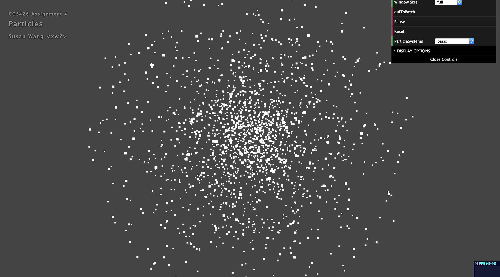
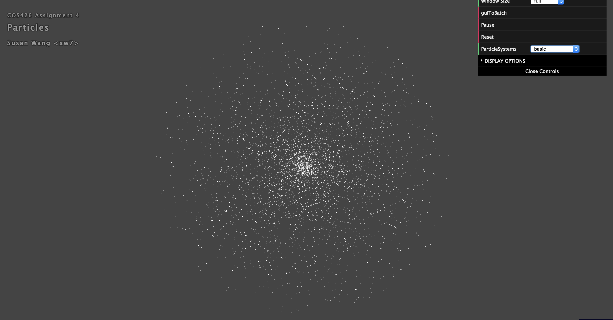
Animated mesh
For Animated mesh, to initialize positions, I first chose a random face from the mesh and then chose a random point within that face. I then set the position to be at that point and scale it based on the scale of the mesh. (This version of implementation is replaced by the uniform distribution implementation.) The effects are shown below.
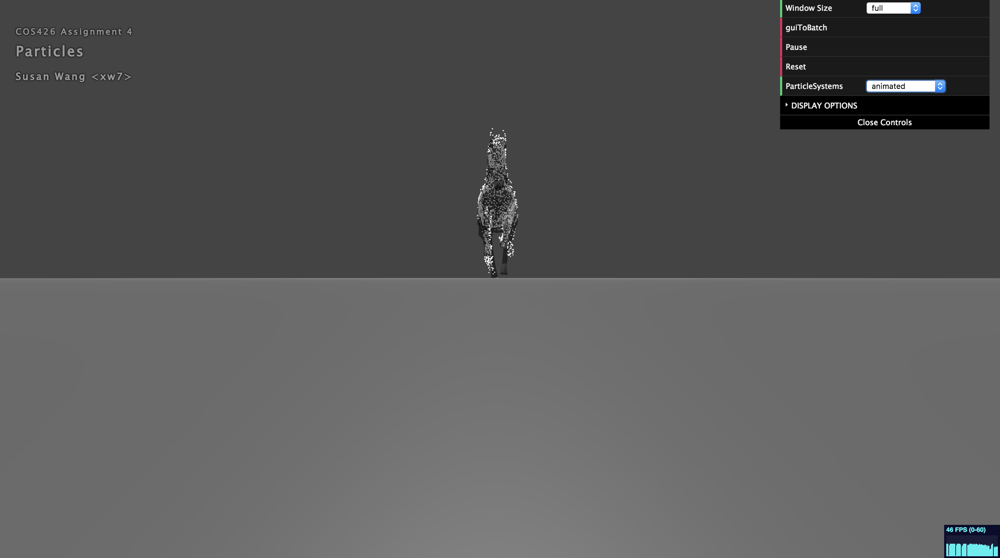
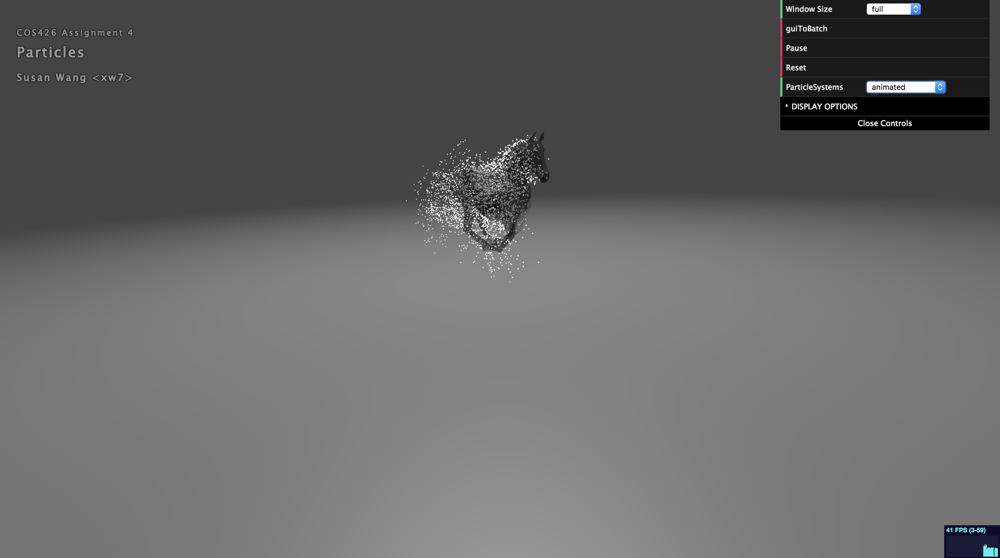
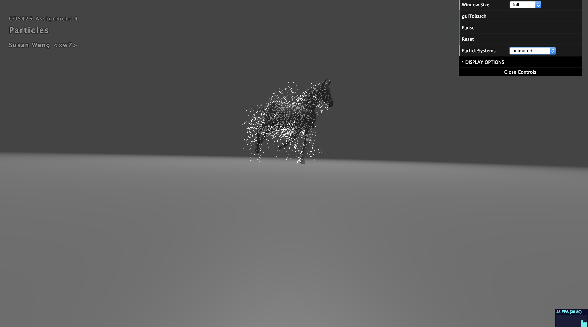
Damping
For damping, I followed the equation on the assignment page and added the force: F = -d1*V - d2*|V|*V in the Euler updateVelocities function. The effects are shown below.
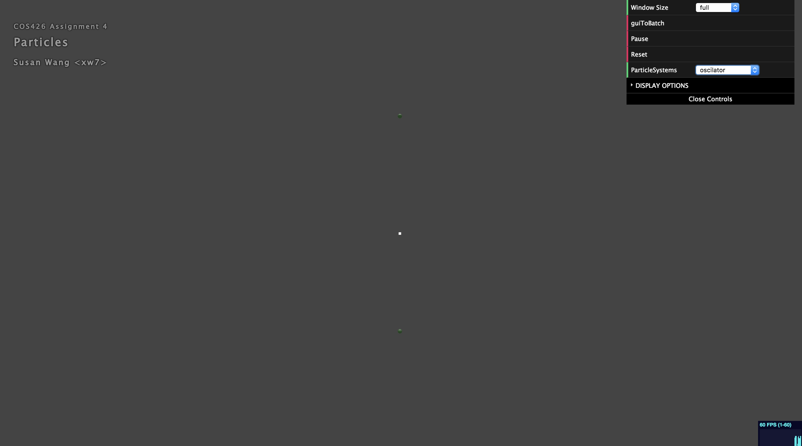
Uniform distribution
For uniform distribution, I created a helper function that calculates the area of a face given its three vertices. I then wrote another helper function that generates a random face weighted by face areas. These helper functions help pick a random face based on face areas. Then I used a method found on https://math.stackexchange.com/questions/18686/uniform-random-point-in-triangle to pick uniformly random point on the face. The position of the particle is set to be at this point. I then scaled the position based on the scale of the mesh. The effects are shown below.
Ground plane
For Bounce Plane, if the position of the particle gets below the plane, I reflect the velocity and multiply it by the damping factor. For Sink Plane, as soon as the particle gets below the plane, the particle gets killed. For the fountain initializer, to initialize positions, I generated random points on the sphere for the particle to be. To initialize velocity, I add the position of the particle to its base velocity, and then scaled up the x and z direction because the base velocity only travels in the y direction. This allows the fountain to look more spread out. The effects are shown below.

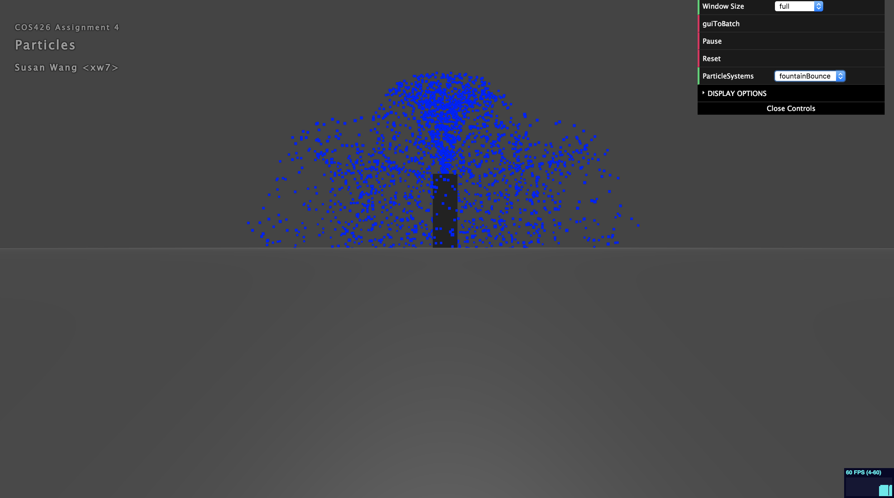
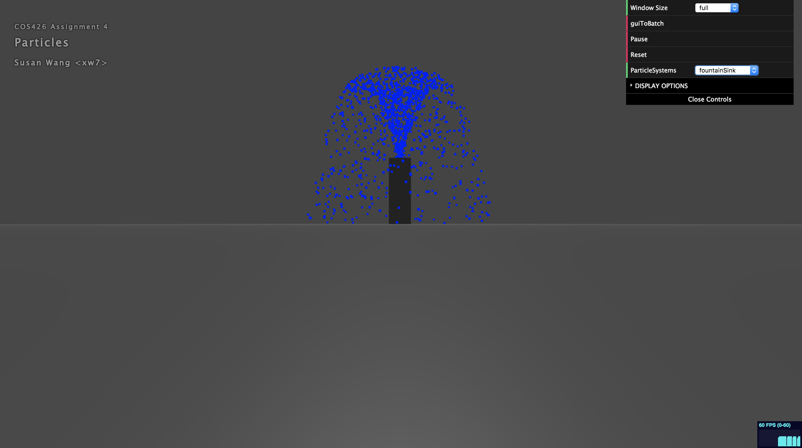
Sphere collision
For sphere collision, when the position of the particle/cloth gets within the sphere, I reflect the velocity and to prevent it from bouncing up, the damping factor is set to 0. To allow the cloth to remain on the surface of the sphere, I project it to the closest point on the surface of the sphere. The effects are seen below.
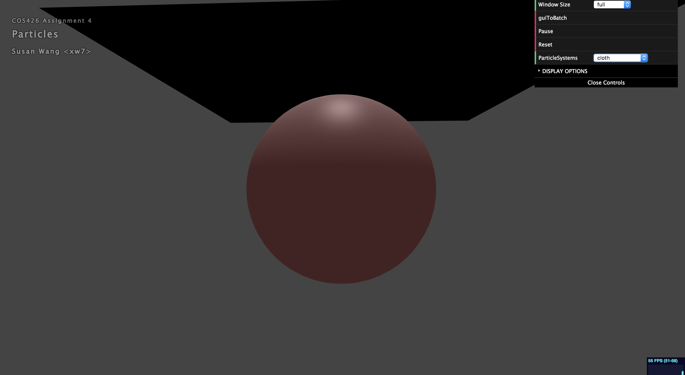
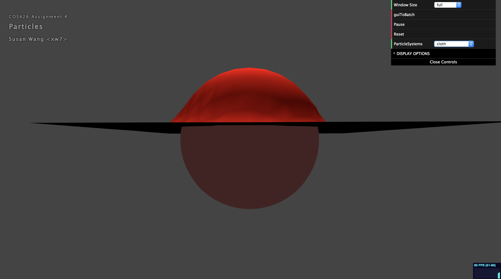
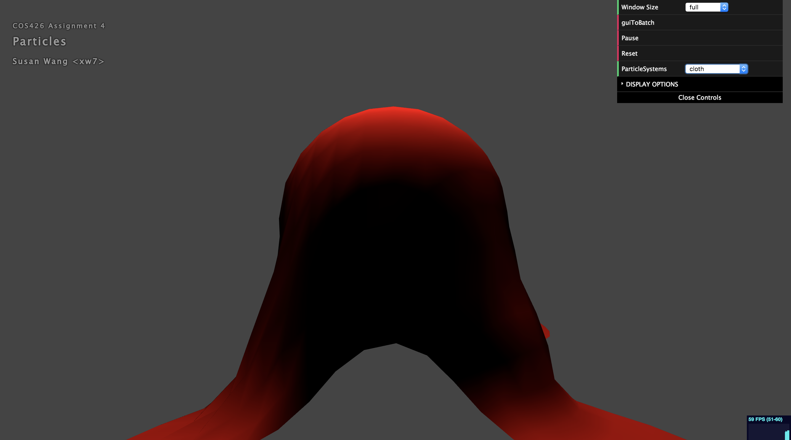
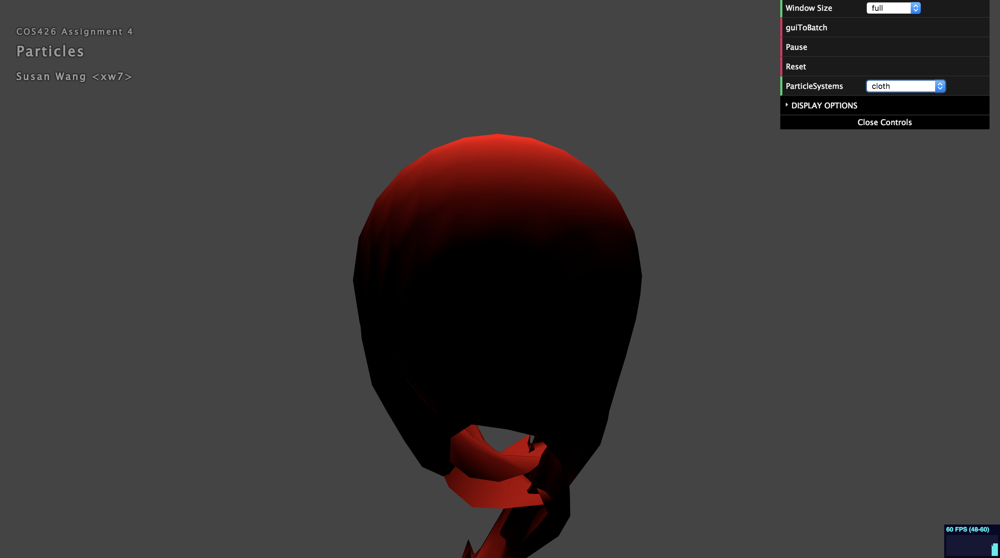
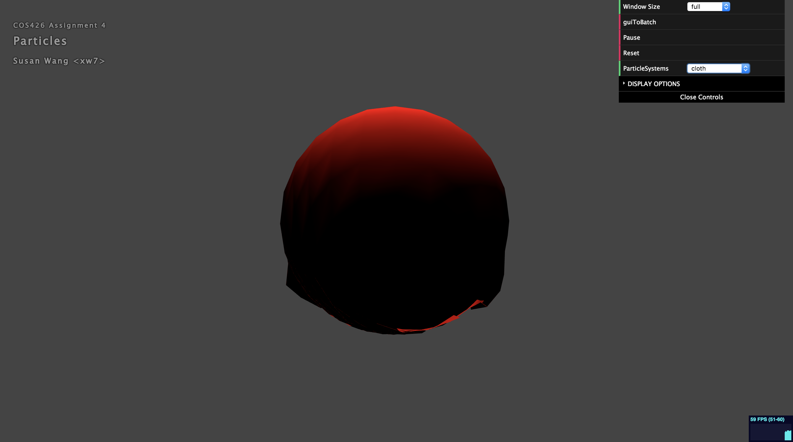
Spring system
For spring system, I first implemented calcHooke() to calculate the spring force between neighboring particles. Then I updated the velocity of the particle taking into consideration the spring forces from the particles on its left, right, top and bottom. The velocity is incremented by the force multiplied by delta_t. The effects are shown above.
Your system
For my system, I implemented a cute rain scene where a big red umbrella protects the little yellow mushroom. The rain drops are initialized at random locations in the scene and given an initial downward velocity. The velocity is then updated with gravity. The big umbrella is set to be a bounce sphere: when the rain particles hit the big umbrella, they are reflected upwards with a damping factor. The floor of the scene is a sink plane and particles get killed as they cross the plane. For best effects, I recommend zooming out a little. A screenshot is shown below.
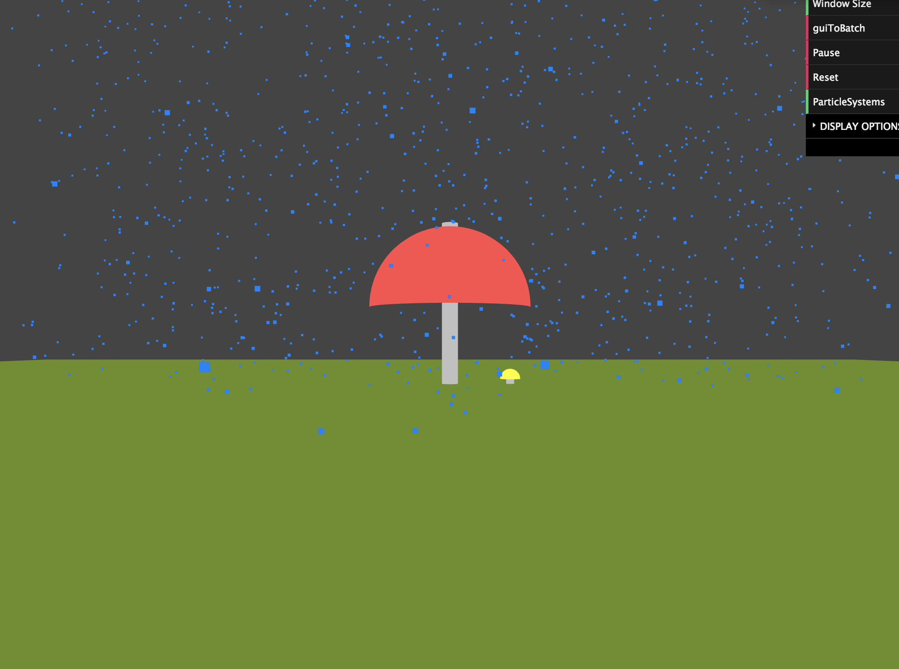
Rendering
For Euler, the color of the particles gets changed according to lifetime. When lifetime gets below 1, the color of the particles is set to be white. This gives the fountain a unique look, as shown below.
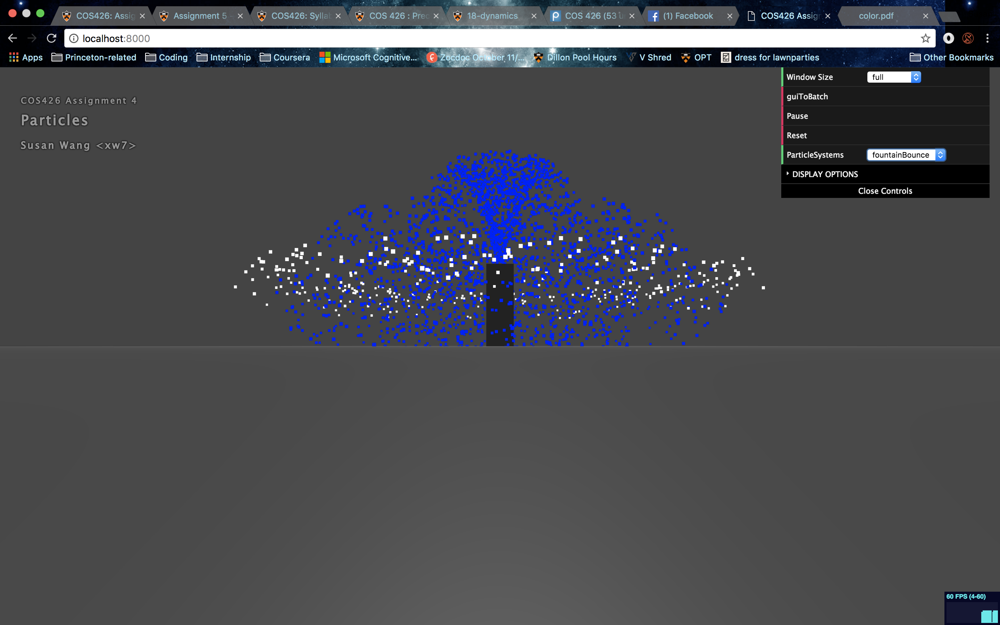
Art
This art submission is from my system. For my system, I implemented a cute rain scene where a big red umbrella protects the little yellow mushroom. The rain drops are initialized at random locations in the scene and given an initial downward velocity. The velocity is then updated with gravity. The big umbrella is set to be a bounce sphere: when the rain particles hit the big umbrella, they are reflected upwards with a damping factor. The floor of the scene is a sink plane and particles get killed as they cross the plane. For best effects, I recommend zooming out a little. A screenshot is shown below.